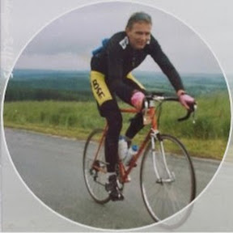
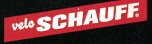
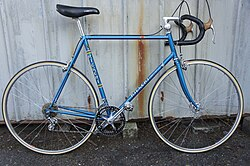
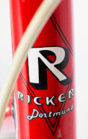
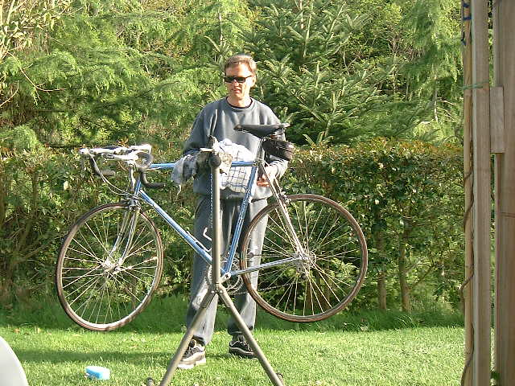
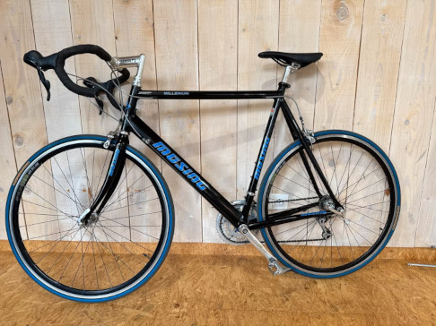
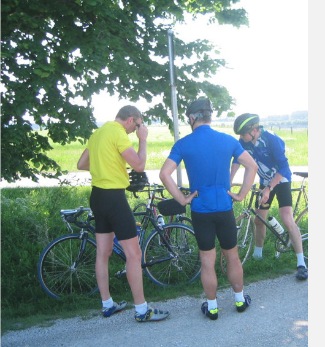
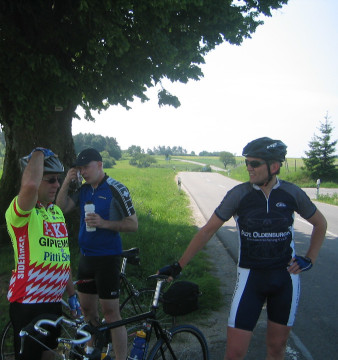
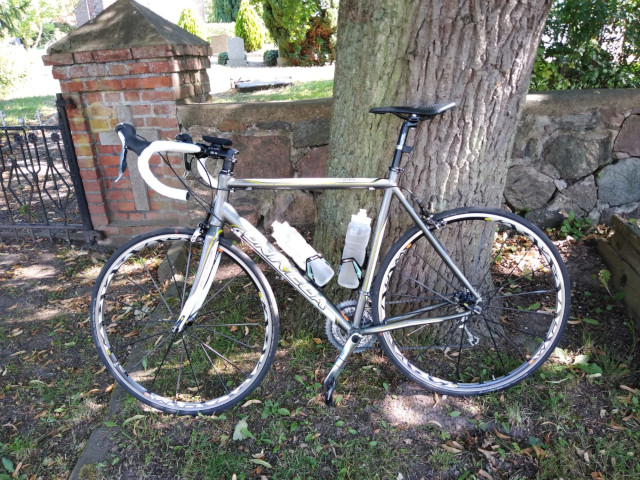

Auf dieser Seite möchte ich die bis dato von mir gefahrenen Bikes
kurz vorstellen.
Es sind in den vergangenen Jahren einige Räder zusammengekommen
und mit jedem einzelnen ist eine kleine Geschichte und ein Abschnitt
meines Lebens verbunden.
Leider habe ich bei einigen Rädern keine oder nur schlechte Fotos
gefunden.

Schauff Rennrad

Logo 1989
An einem späten Nachmittag, es muß ungefähr 1988 gewesen sein, kam
Bernadette von der Arbeit nach Hause und hatte eine Überraschung für
mich dabei. Sie war direkt nach der Arbeit zum Zweirad- und
Nähmaschinenprofi Büld in Lohne gefahren und hatte für uns beide ein
neues Rennrad gekauft. Büld war damals noch nicht lange im Geschäft und
hatte entsprechend wenig Erfahrung mit der Konfiguration von Rennrädern.
Zu der Zeit sah man noch recht selten Rennradfahrer auf den Straßen und
wenn man einen sah, hat man staunend hinterher gesehen.
Es hat einige Monate gedauert bis ich mich mit der neuen Materie
vertraut gemacht hatte, um das Rad mit entsprechend passenden
Komponenten an meinen Bedarf anzupassen. Ursprünglich war der Rahmen
rot. Ich habe mich später für das Umlackieren entschieden und ein
peppiges Orange gewählt.
Das Foto wurde von einem professionellen Fotografen am Straßenrand beim
Jedermannrennen Telft-Bastogne-Telft (bekannt als
Lüttich-Bastogne-Lüttich) aufgenommen.
___

Rickert - Campagnolo
1951 machte sich Rickert mit einer eigenen Werkstatt zur Fertigung von Rahmen für Rennräder selbständig. In seiner Werkstatt in Dortmund-Eving wurden in Handarbeit Rahmen in den handelsüblichen Rahmengrößen sowie individuell modifizierte Sonderanfertigungen gebaut. Es handelte sich bei Rickert-Rahmen ausschließlich um Stahlrahmen, die gelötet und gemufft wurden. Als Rohrmaterial wurden in der Regel Reynolds-531-Rohre verwendet.
Auf Rahmen und Fahrrädern der Marke Rickert wurden zahlreiche Titel errungen. So wurde Udo Hempel 1970 Weltmeister und 1972 Olympiasieger in der Mannschaftsverfolgung auf Rickert-Rahmen. Weitere prominente Kunden waren Dieter Gieseler, der 1960 auf einem Rickert-Rad bei den Olympischen Spielen in Rom Silber im Zeitfahren errang, sowie Karl-Heinz Marsell, der 1961 Steher-Weltmeister wurde. Im Jahre 2002 gab Rickert aus gesundheitlichen Gründen sein Handwerk auf und zog in seine Heimatstadt Fröndenberg/Ruhr. Von ihm gefertigte Rahmen sind begehrte Sammlerstücke.
Radsport-Legenden mit Goldrahmen

Meine Maschine (Rickert - Last Edition)
___

Müsing Millennium (nicht mein bike)

Mein Müsing Millennium

Mein Müsing Millennium ___
